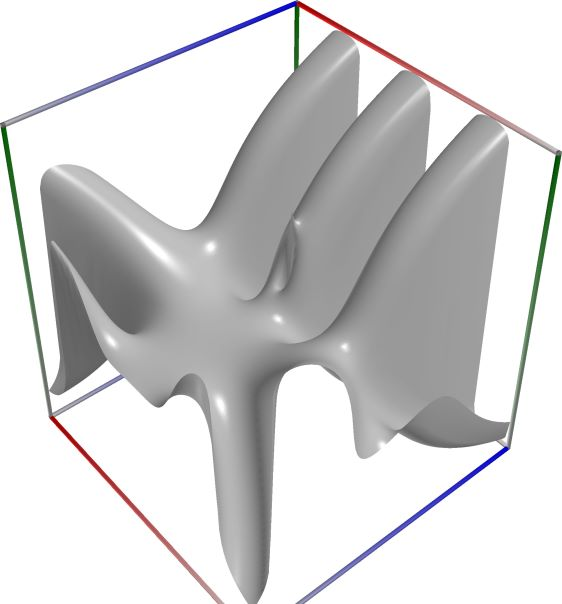
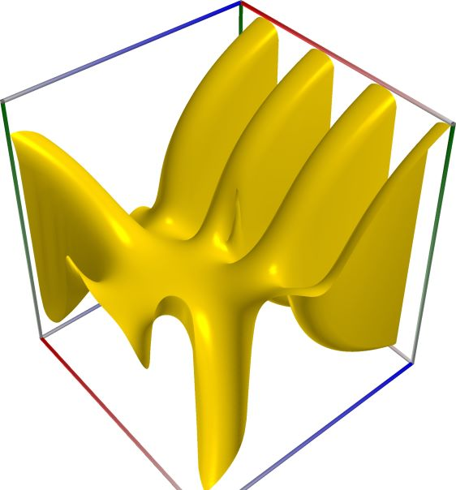
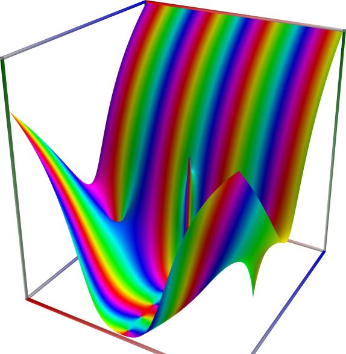
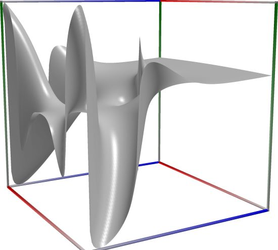
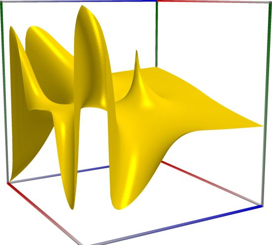
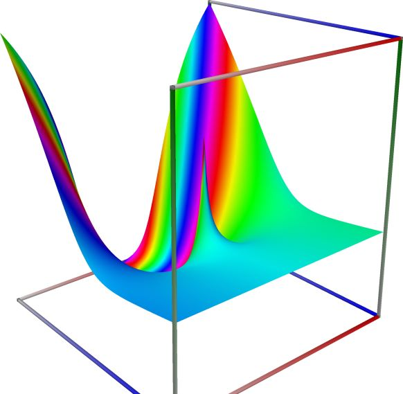
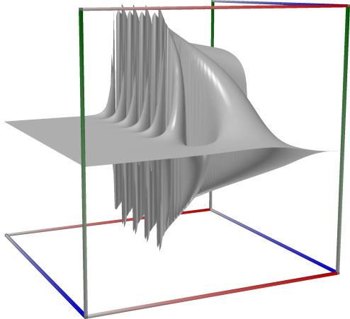
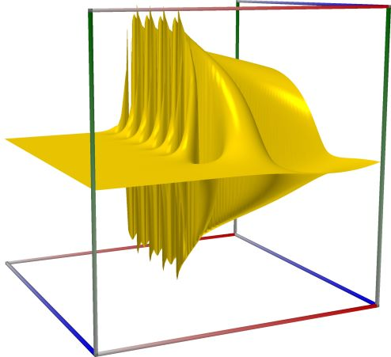
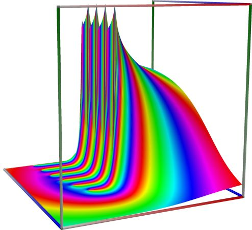

Hurwitz zeta and related functions#
Hurwitz zeta function, \(\zeta(s,a)\)#
- ctx.hurwitz_zeta(s, a)#
where
ctxismath53,ctxflint.Returns the Hurwitz zeta function, defined as \(\displaystyle \zeta(s,a) = \sum_{k=0}^\infty \frac{1}{(a+k)^s} \,\), \(s>1, a \ne 0,-1,-2, \ldots\), and by analytic continuation for \(s \ne 0\). The amath implementation requires \(a>0\). If \(a=1\) then \(\zeta(s)\) is returned, and if \(s=0\) the result is \(\frac{1}{2}-a\).
See also Wikipedia [1319], MathWorld [954], NIST [17], Ehrhardt [295] (3.6.6), Flint [757].
\[\zeta\left(-n,a\right)=-\frac{B_{n+1}\left(a\right)}{n+1}.\]\[\zeta\left(s,1\right)=\zeta\left(s\right).\]\[\zeta\left(s,\tfrac{1}{2}\right)=(2^{s}-1)\zeta\left(s\right).\]\[\zeta'\left(0,a\right)=\log\Gamma\left(a\right)-\tfrac{1}{2}\log\left(2\pi\right).\]
\(\quad\)
\(\quad\)
3D wpf plot: real part (left figure), imaginary part (middle figure) and absolute value with color-coded phase (right figure) of the complex sine function \(z = \sin(x + iy)\), with \(-6 \le x \le 6\) (blue axis), \(-6 \le y \le 6\) (red axis), \(-10 \le z \le 10\) (green axis). Function values are loglog-transformed.

\(\quad\)
\(\quad\)
3D wpf plot: real part (left figure), imaginary part (middle figure) and absolute value with color-coded phase (right figure) of the complex sine function \(z = \sin(x + iy)\), with \(-6 \le x \le 6\) (blue axis), \(-6 \le y \le 6\) (red axis), \(-10 \le z \le 10\) (green axis). Function values are loglog-transformed.

\(\quad\)
\(\quad\)
3D wpf plot: real part (left figure), imaginary part (middle figure) and absolute value with color-coded phase (right figure) of the complex sine function \(z = \sin(x + iy)\), with \(-6 \le x \le 6\) (blue axis), \(-6 \le y \le 6\) (red axis), \(-10 \le z \le 10\) (green axis). Function values are loglog-transformed.
An example with real input:
>>> from xlcalcnet import * >>> s = 3; a = 0.3; gui.setdps(90) >>> for ctx in gui.ctxlist_noboost_real: print(ctx.fmtname + ': ' + ctx.fmt(ctx.hurwitz_zeta(s, a))) fpm: 37.636268294363 mpm: 37.6362682943630153333846652574957033323512012672705829910377515404933650440486247990956452 dpm: 37.6362682943630153333846652574957033323512012672705829910377515404933650440486247990956452 gpm: 37.636268294363015333384665257495703332351201267270582991037751540493365044048624799095645201 apm: ([37.6362682943630153333846652574957033323512012672705829910377515404933650440486247990956452 +/- 6.65e-89], 0) math53: 37.636268294363 sflint: 37.63626 dflint: 37.636268294363 eflint: 37.636268294363015328 qflint: 37.6362682943630153333846652574957 oflint: 37.636268294363015333384665257495703332351201267270582991037751540493365 mflint: 37.6362682943630153333846652574957033323512012672705829910377515404933650440486247990956451 aflint: [37.6362682943630153333846652574957033323512012672705829910377515404933650440486247990956451 +/- 5.61e-89]
An example with complex input, using C#-style formatting for complex numbers for the result
>>> from xlcalcnet import * >>> s = 3; z = -5.1+2j; gui.setdps(50) >>> for ctx in [fpm, mpm, cmath53]: print(ctx.fmtname + ': ' + ctx.fmt(ctx.hurwitz_zeta(s, z))) fpm: (0.0111748869624824, 0.00921098444064709) mpm: (0.011174886962482443982994786732550832143817085284742, 0.0092109844406470893156030729594993856027169293681661) cmath53: (0.0111748869624825, 0.00921098444064707)
An example with the same complex input as above, showing only the real part of the result:
>>> from xlcalcnet import * >>> s = 3; z = -5.1+2j; gui.setdps(90) >>> for ctx in gui.ctxlist_noboost_cplx: ... print(ctx.fmtname + ': ' + ctx.realctx.fmt(ctx.real(ctx.hurwitz_zeta(s, z)))) fpm: 0.0111748869624824 mpm: 0.0111748869624824439829947867325508321438170852847421677355709908733292318429159366335844799 dpm: 0.0111748869624824439829947867325508321438170852847421677355709908733292318429159366335844799 gpm: 0.0111748869624824439829947867325508321438170852847421677355709908733292318429159366335844799 apm: [0.011174886962482443982994786732550832143817085284742167735570990873329231842915936633584480 +/- 7.94e-91] cmath53: 0.0111748869624825 sflintc: 0.01117489 dflintc: 0.0111748869624824 eflintc: 0.011174886962482443983 qflintc: 0.0111748869624824439829947867325508 oflintc: 0.011174886962482443982994786732550832143817085284742167735570990873329232 mflintc: 0.0111748869624824439829947867325508321438170852847421677355709908733292318429159366335844799 aflintc: [0.011174886962482443982994786732550832143817085284742167735570990873329231842915936633584480 +/- 6.56e-91]
An example with the same complex input as above, showing only the imaginary part of the result:
>>> from xlcalcnet import * >>> s = 3; z = -5.1+2j; gui.setdps(90) >>> for ctx in gui.ctxlist_noboost_cplx: ... print(ctx.fmtname + ': ' + ctx.realctx.fmt(ctx.imag(ctx.hurwitz_zeta(s, z)))) fpm: 0.00921098444064709 mpm: 0.00921098444064708931560307295949938560271692936816603015932873274623325066914898488979236219 dpm: 0.00921098444064708931560307295949938560271692936816603015932873274623325066914898488979236219 gpm: 0.0092109844406470893156030729594993856027169293681660301593287327462332506691489848897923621897 apm: [0.009210984440647089315603072959499385602716929368166030159328732746233250669148984889792362 +/- 6.87e-91] cmath53: 0.00921098444064707 sflintc: 0.009210985 dflintc: 0.00921098444064709 eflintc: 0.0092109844406470893158 qflintc: 0.00921098444064708931560307295949939 oflintc: 0.0092109844406470893156030729594993856027169293681660301593287327462332507 mflintc: 0.0092109844406470893156030729594993856027169293681660301593287327462332506691489848897923622 aflintc: [0.009210984440647089315603072959499385602716929368166030159328732746233250669148984889792362 +/- 5.89e-91]
The above and additional examples can be found online in the
DataXlCalcNetrepository or in the corresponding localDataXlCalcNetfolder for Python (real input), Python (complex input), and C# (real or complex input).


Generalized harmonic number function, \(H_x^{(r)}\)#
- ctx.harmonic2(x, s)#
Returns the generalized harmonic function \(H_x^{(r)} = \zeta(r) - \zeta(r,x+1)\) for \(r \ne 1\) and \(H_x^{(r)} = H_x\) for \(r = 1\).
See also: Wikipedia [1279], MathWorld [918], Ehrhardt [295] (3.6.21).
An example with real input:
>>> from xlcalcnet import * >>> z = 3; r = 4.3; gui.setdps(90) >>> for ctx in gui.ctxlist_noboost_real: print(ctx.fmtname + ': ' + ctx.fmt(ctx.harmonic2(z, r))) fpm: 1.05964507222072 mpm: 1.05964507222071983579913543278551384074306940162974178313345689098004276049712108304330178 dpm: 1.05964507222071983579913543278551384074306940162974178313345689098004276049712108304330178 gpm: 1.0596450722207198357991354327855138407430694016297417831334568909800427604971210830433017801 apm: ([1.05964507222071983579913543278551384074306940162974178313345689098004276049712108304330178 +/- 3.57e-90], 0) math53: 1.05964507222072 sflint: 1.059645 dflint: 1.05964507222072 eflint: 1.0596450722207198358 qflint: 1.05964507222071983579913543278551 oflint: 1.0596450722207198357991354327855138407430694016297417831334568909800428 mflint: 1.05964507222071983579913543278551384074306940162974178313345689098004276049712108304330178 aflint: [1.05964507222071983579913543278551384074306940162974178313345689098004276049712108304330178 +/- 3.85e-90]
An example with complex input, using C#-style formatting for complex numbers for the result
>>> from xlcalcnet import * >>> s = 3; z = -5.1+2j; gui.setdps(50) >>> for ctx in [fpm, mpm, cmath53]: print(ctx.fmtname + ': ' + ctx.fmt(ctx.harmonic2(s, z))) fpm: (-151.710872341689, -253.435525342544) mpm: (-151.7108723416894252214187665145810606372224252752, -253.43552534254381371474190372572360694604058759049) cmath53: (-151.710872341671, -253.435525342526)
An example with the same complex input as above, showing only the real part of the result:
>>> from xlcalcnet import * >>> s = 3; z = -5.1+2j; gui.setdps(90) >>> for ctx in gui.ctxlist_noboost_cplx: ... print(ctx.fmtname + ': ' + ctx.realctx.fmt(ctx.real(ctx.harmonic2(s, z)))) fpm: -151.710872341689 mpm: -151.710872341689425221418766514581060637222425275200569604163721964559323390870191608327818 dpm: -151.710872341689425221418766514581060637222425275200569604163721964559323390870191608327818 gpm: -151.71087234168942522141876651458106063722242527520056960416372196455932339087019160832781799 apm: [-151.7108723416894252214187665145810606372224252752005696041637219645593233908701916 +/- 1.96e-80] cmath53: -151.710872341671 sflintc: -151.7109 dflintc: -151.710872341689 eflintc: -151.7108723416894252 qflintc: -151.710872341689425221418766514581 oflintc: -151.71087234168942522141876651458106063722242527520056960416372196455932 mflintc: -151.710872341689425221418766514581060637222425275200569604163721964559323390870191608327705 aflintc: [-151.7108723416894252214187665145810606372224252752005696041637219645593233908701916 +/- 1.74e-80]
An example with the same complex input as above, showing only the imaginary part of the result:
>>> from xlcalcnet import * >>> s = 3; z = -5.1+2j; gui.setdps(90) >>> for ctx in gui.ctxlist_noboost_cplx: ... print(ctx.fmtname + ': ' + ctx.realctx.fmt(ctx.imag(ctx.harmonic2(s, z)))) fpm: -253.435525342544 mpm: -253.435525342543813714741903725723606946040587590490596981419066634364019427577397349486819 dpm: -253.435525342543813714741903725723606946040587590490596981419066634364019427577397349486819 gpm: -253.435525342543813714741903725723606946040587590490596981419066634364019427577397349486819 apm: [-253.4355253425438137147419037257236069460405875904905969814190666343640194275773973 +/- 8.39e-80] cmath53: -253.435525342526 sflintc: -253.4355 dflintc: -253.435525342544 eflintc: -253.4355253425438137 qflintc: -253.435525342543813714741903725724 oflintc: -253.43552534254381371474190372572360694604058759049059698141906663436402 mflintc: -253.435525342543813714741903725723606946040587590490596981419066634364019427577397349485136 aflintc: [-253.4355253425438137147419037257236069460405875904905969814190666343640194275773973 +/- 7.71e-80]
The above and additional examples can be found online in the
DataXlCalcNetrepository or in the corresponding localDataXlCalcNetfolder for Python (real input), Python (complex input), and C# (real or complex input).
Bernoulli numbers, \(B_n\)#
- ctx.bernoulli(n)#
where
ctxismath53,ctxboostorctxflint.Note ctxboost.BernoulliB2n(n)
Returns the Bernoulli numbers \(B_n\), which are defined by their generating function \(\displaystyle \frac{1}{e^t-1} \sum_{n=0}^{\infty} B_n \frac{t^n}{n!}\), \(|t < 2\pi|\). If \(n<0\) or if \(n>2\) is odd, the result is \(0\), and \(B_1=-1/2\).
See also Wikipedia [1243], MathWorld [872], NIST [242], BoostMath [93], Ehrhardt [295] (3.10.2), Mpmath [579].
An example with real input:
>>> from xlcalcnet import * >>> n = 16; gui.setdps(90) >>> for ctx in gui.ctxlist_noipm_real: print(ctx.fmtname + ': ' + ctx.fmt(ctx.bernoulli(n))) fpm: -7.0921568627451 mpm: -7.09215686274509803921568627450980392156862745098039215686274509803921568627450980392156863 dpm: -7.09215686274509803921568627450980392156862745098039215686274509803921568627450980392156863 gpm: -7.0921568627450980392156862745098039215686274509803921568627450980392156862745098039215686297 apm: [-7.09215686274509803921568627450980392156862745098039215686274509803921568627450980392156863 +/- 4.26e-90] math53: -7.0921568627451 sreal: -7.092157 dreal: -7.0921568627451 ereal: -7.0921568627450980392 qreal: -7.0921568627450980392156862745098 oreal: -7.0921568627450980392156862745098039215686274509803921568627450980392157 mreal: -7.09215686274509803921568627450980392156862745098039215686274509803921568627450980392156863 sflint: -7.092157 dflint: -7.0921568627451 eflint: -7.0921568627450980392 qflint: -7.0921568627450980392156862745098 oflint: -7.0921568627450980392156862745098039215686274509803921568627450980392157 mflint: -7.09215686274509803921568627450980392156862745098039215686274509803921568627450980392156863 aflint: [-7.09215686274509803921568627450980392156862745098039215686274509803921568627450980392156863 +/- 7.21e-90]
The above and additional examples can be found online in the
DataXlCalcNetrepository or in the corresponding localDataXlCalcNetfolder for Python (real input), and C# (real or complex input).
Bernoulli polynomials, \(B_n(x)\)#
- ctx.bernpoly(n, x)#
Returns \(\displaystyle B_n(x) = \sum_{n=0}^{\infty} \binom{n}{k} B_k x^{n-k}\), the Bernoulli polynomial of degree \(n \ge 0\).
See also Wikipedia [1244], MathWorld [873], NIST [242], Ehrhardt [295] (3.10.3), Flint [722], Mpmath [580].
See the Amath documentation (p. 146) for connection formula to Hurwitz Zeta.
An example with real input:
>>> from xlcalcnet import * >>> n = 12; z = 4.3; gui.setdps(90) >>> for ctx in gui.ctxlist_noboost_real: print(ctx.fmtname + ': ' + ctx.fmt(ctx.bernpoly(n, z))) fpm: 6179605.09011217 mpm: 6179605.09011216976744688644688644688644688644688644688644688644688644688644688644688644688 dpm: 6179605.09011216976744688644688644688644688644688644688644688644688644688644688644688644688 gpm: 6179605.0901121697674468864468864468864468864468864468864468864468864468864468864468864468799 apm: [6179605.090112169767446886446886446886446886446886446886446886446886446886446886446886447 +/- 2.07e-82] math53: 6179605.09011217 sflint: 6179609 dflint: 6179605.09011217 eflint: 6179605.0901121697711 qflint: 6179605.09011216976744688644688644 oflint: 6179605.0901121697674468864468864468864468864468864468864468864468864467 mflint: 6179605.09011216976744688644688644688644688644688644688644688644688644688644688644688644689 aflint: [6179605.090112169767446886446886446886446886446886446886446886446886446886446886446886447 +/- 2.98e-82]
An example with complex input, using C#-style formatting for complex numbers for the result
>>> from xlcalcnet import * >>> n = 3; z = -5.1+2j; gui.setdps(50) >>> for ctx in [fpm, mpm, cmath53]: print(ctx.fmtname + ': ' + ctx.fmt(ctx.bernpoly(n, z))) fpm: (-107.016, 179.66) mpm: (-107.016, 179.66) cmath53: (-107.016, 179.66)
An example with the same complex input as above, showing only the real part of the result:
>>> from xlcalcnet import * >>> n = 3; z = -5.1+2j; gui.setdps(90) >>> for ctx in gui.ctxlist_noboost_cplx: ... print(ctx.fmtname + ': ' + ctx.realctx.fmt(ctx.real(ctx.bernpoly(n, z)))) fpm: -107.016 mpm: -107.016 dpm: -107.016 gpm: -107.016 apm: [-107.016000000000000000000000000000000000000000000000000000000000000000000000000000000000000 +/- 2.42e-88] cmath53: -107.016 sflintc: -107.016 dflintc: -107.016 eflintc: -107.01599999999999999 qflintc: -107.016 oflintc: -107.016 mflintc: -107.016 aflintc: [-107.016000000000000000000000000000000000000000000000000000000000000000000000000000000000000 +/- 3.45e-88]
An example with the same complex input as above, showing only the imaginary part of the result:
>>> from xlcalcnet import * >>> n = 3; z = -5.1+2j; gui.setdps(90) >>> for ctx in gui.ctxlist_noboost_cplx: ... print(ctx.fmtname + ': ' + ctx.realctx.fmt(ctx.imag(ctx.bernpoly(n, z)))) fpm: 179.66 mpm: 179.66 dpm: 179.66 gpm: 179.65999999999999999999999999999999999999999999999999999999999999999999999999999999999999999 apm: [179.660000000000000000000000000000000000000000000000000000000000000000000000000000000000000 +/- 1.90e-88] cmath53: 179.66 sflintc: 179.66 dflintc: 179.66 eflintc: 179.65999999999999999 qflintc: 179.66 oflintc: 179.66 mflintc: 179.66 aflintc: [179.660000000000000000000000000000000000000000000000000000000000000000000000000000000000000 +/- 3.89e-88]
The above and additional examples can be found online in the
DataXlCalcNetrepository or in the corresponding localDataXlCalcNetfolder for Python (real input), Python (complex input), and C# (real or complex input).
Euler numbers#
- ctx.eulernum(n)#
where
ctxismath53,ctxflint.Returns the Euler numbers \(E_n\). See also Wikipedia [1272], MathWorld [915], Flint [756], Ehrhardt [295] (3.10.8), Mpmath [606].
The Euler numbers \(E_n\) can be defined as
\[E_n = \frac{4^n \beta(n+1)}{\zeta(n)} \frac{2B_n}{\pi}\]An example with real input:
>>> from xlcalcnet import * >>> n = 16; gui.setdps(90) >>> for ctx in gui.ctxlist_noboost_real: print(ctx.fmtname + ': ' + ctx.fmt(ctx.eulernum(n))) fpm: 19391512145 mpm: 19391512145.0 dpm: 19391512145.0 gpm: 19391512145.0 apm: [19391512145.0000000000000000000000000000000000000000000000000000000000000000000000000000000 +/- 3.01e-80] math53: 19391512145 sflint: 1.939151E+10 dflint: 19391512145 eflint: 19391512145 qflint: 19391512145 oflint: 19391512145 mflint: 19391512145 aflint: 19391512145.0000000000000000000000000000000000000000000000000000000000000000000000000000000
The above and additional examples can be found online in the
DataXlCalcNetrepository or in the corresponding localDataXlCalcNetfolder for Python (real input), and C# (real or complex input).
Euler polynomials, \(E_n(x)\)#
- ctx.eulerpoly(n, x)#
Returns \(\displaystyle E_n(x) = \frac{2}{n+1} \left( B_{n+1}(x)-2^{n+1}B_{n+1}\left(\frac{x}{2}\right) \right)\), the Euler polynomial of degree \(n \ge 0\). Special values include the Euler numbers \(E_n = 2^n E_n(1/2)\).
See also Wikipedia [1273], MathWorld [916], NIST [242], Ehrhardt [295] (3.10.9), Mpmath [607].
\[E_{n-1}\left(x\right)=\frac{2}{n}\left(B_{n}\left(x\right)-2^{n}B_{n}\left(\tfrac{1}{2}x\right)\right),\]\[E_{n-1}\left(x\right)=\frac{2^{n}}{n}\left(B_{n}\left(\tfrac{1}{2}x+\tfrac{1}{2}\right)-B_{n}\left(\tfrac{1}{2}x\right)\right).\]An example with real input:
>>> from xlcalcnet import * >>> n = 12; z = 4.3; gui.setdps(90) >>> for ctx in gui.ctxlist_noboost_real: print(ctx.fmtname + ': ' + ctx.fmt(ctx.eulerpoly(n, z))) fpm: 6179605.09011217 mpm: 6179605.09011216976744688644688644688644688644688644688644688644688644688644688644688644688 dpm: 6179605.09011216976744688644688644688644688644688644688644688644688644688644688644688644688 gpm: 6179605.0901121697674468864468864468864468864468864468864468864468864468864468864468864468799 apm: [6179605.090112169767446886446886446886446886446886446886446886446886446886446886446886447 +/- 2.07e-82] math53: 6179605.09011217 sflint: 6179609 dflint: 6179605.09011217 eflint: 6179605.0901121697711 qflint: 6179605.09011216976744688644688644 oflint: 6179605.0901121697674468864468864468864468864468864468864468864468864467 mflint: 6179605.09011216976744688644688644688644688644688644688644688644688644688644688644688644689 aflint: [6179605.090112169767446886446886446886446886446886446886446886446886446886446886446886447 +/- 2.98e-82]
An example with complex input, using C#-style formatting for complex numbers for the result
>>> from xlcalcnet import * >>> n = 3; z = -5.1+2j; gui.setdps(50) >>> for ctx in [fpm, mpm, cmath53]: print(ctx.fmtname + ': ' + ctx.fmt(ctx.eulerpoly(n, z))) fpm: (-104.216, 178.66) mpm: (-104.216, 178.66) cmath53: (-104.216, 178.66)
An example with the same complex input as above, showing only the real part of the result:
>>> from xlcalcnet import * >>> n = 3; z = -5.1+2j; gui.setdps(90) >>> for ctx in gui.ctxlist_noboost_cplx: ... print(ctx.fmtname + ': ' + ctx.realctx.fmt(ctx.real(ctx.eulerpoly(n, z)))) fpm: -104.216 mpm: -104.216 dpm: -104.216 gpm: -104.216 apm: [-104.21600000000000000000000000000000000000000000000000000000000000000000000000000000000000 +/- 1.32e-87] cmath53: -104.216 sflintc: -104.216 dflintc: -104.216 eflintc: -104.21599999999999999 qflintc: -104.216 oflintc: -104.216 mflintc: -104.216 aflintc: [-104.21600000000000000000000000000000000000000000000000000000000000000000000000000000000000 +/- 2.46e-87]
An example with the same complex input as above, showing only the imaginary part of the result:
>>> from xlcalcnet import * >>> n = 3; z = -5.1+2j; gui.setdps(90) >>> for ctx in gui.ctxlist_noboost_cplx: ... print(ctx.fmtname + ': ' + ctx.realctx.fmt(ctx.imag(ctx.eulerpoly(n, z)))) fpm: 178.66 mpm: 178.66 dpm: 178.66 gpm: 178.65999999999999999999999999999999999999999999999999999999999999999999999999999999999999999 apm: [178.66000000000000000000000000000000000000000000000000000000000000000000000000000000000000 +/- 1.26e-87] cmath53: 178.66 sflintc: 178.66 dflintc: 178.66 eflintc: 178.65999999999999999 qflintc: 178.66 oflintc: 178.66 mflintc: 178.66 aflintc: [178.66000000000000000000000000000000000000000000000000000000000000000000000000000000000000 +/- 2.76e-87]
The above and additional examples can be found online in the
DataXlCalcNetrepository or in the corresponding localDataXlCalcNetfolder for Python (real input), Python (complex input), and C# (real or complex input).
Barnes G-function#
- ctx.barnes_g(z)#
Returns the Barnes G-function of z. See also Wikipedia [1291], MathWorld [910], NIST [20], Whittaker and Watson [1074], Mpmath [622].
Evaluates the Barnes G-function, which generalizes the superfactorial (superfac()) and by extension also the hyperfactorial (hyperfac()) to the complex numbers in an analogous way to how the gamma function generalizes the ordinary factorial.
The Barnes G-function may be defined in terms of a Weierstrass product:
\[G(z+1) = (2\pi)^{z/2} e^{-[z(z+1)+\gamma z^2]/2} \prod_{n=1}^\infty \left[\left(1+\frac{z}{n}\right)^ne^{-z+z^2/(2n)}\right]\]For positive integers \(n\), we have have relation to superfactorials \(G(n) = \mathrm{sf}(n-2) = 0! \cdot 1! \cdots (n-2)!\).
An example with real input:
>>> from xlcalcnet import * >>> x = 5.1; gui.setdps(90) >>> for ctx in gui.ctxlist_noboost_real: print(ctx.fmtname + ': ' + ctx.fmt(ctx.barnes_g(x))) fpm: 15.4289500100001 mpm: 15.4289500100001297442758321153010070641263964210469924923969319066094138106886093708816721 dpm: 15.4289500100001297442758321153010070641263964210469924923969319066094138106886093708816721 gpm: 15.4289500100001297442758321153010070641263964210469924923969319066094138106886093708816721 apm: [15.4289500100001297442758321153010070641263964210469924923969319066094138106886093708817 +/- 3.60e-86] math53: 15.4289500100001 sflint: 15.42895 dflint: 15.4289500100001 eflint: 15.42895001000012974 qflint: 15.428950010000129744275832115301 oflint: 15.428950010000129744275832115301007064126396421046992492396931906609413 mflint: 15.428950010000129744275832115301007064126396421046992492396931906609413810688609370881672 aflint: [15.42895001000012974427583211530100706412639642104699249239693190660941381068860937088167 +/- 8.69e-87]
An example with complex input, using C#-style formatting for complex numbers for the result
>>> from xlcalcnet import * >>> x = -5.1+2j; gui.setdps(50) >>> for ctx in [fpm, mpm]: print(ctx.fmtname + ': ' + ctx.fmt(ctx.barnes_g(x))) fpm: (955251104405502, 136041869824361) mpm: (955251104405501.51861286680456826683757610281610739, 136041869824361.01029551822708512296857118729189902)
An example with the same complex input as above, showing only the real part of the result:
>>> from xlcalcnet import * >>> x = -5.1+2j; gui.setdps(90) >>> for ctx in gui.ctxlist_noboost_cplx: ... print(ctx.fmtname + ': ' + ctx.realctx.fmt(ctx.real(ctx.barnes_g(x)))) fpm: 955251104405502 mpm: 955251104405501.518612866804568266837576102816107417803111259338942662927206555907929044994 dpm: 955251104405501.518612866804568266837576102816107417803111259338942662927206555907929044994 gpm: 955251104405501.51861286680456826683757610281610741780311125933894266292720655590792904499397 apm: [955251104405501.518612866804568266837576102816107417803111259338942662927206555907929045 +/- 6.84e-73] cmath53: NaN sflintc: 9.552504E+14 dflintc: 955251104405499 eflintc: 955251104405501.51794 qflintc: 955251104405501.518612866804568265 oflintc: 955251104405501.51861286680456826683757610281610741780311125933894266282 mflintc: 955251104405501.518612866804568266837576102816107417803111259338942662927206555907929044878 aflintc: [955251104405501.518612866804568266837576102816107417803111259338942662927206555907929045 +/- 9.22e-73]
An example with the same complex input as above, showing only the imaginary part of the result:
>>> from xlcalcnet import * >>> x = -5.1+2j; gui.setdps(90) >>> for ctx in gui.ctxlist_noboost_cplx: ... print(ctx.fmtname + ': ' + ctx.realctx.fmt(ctx.imag(ctx.barnes_g(x)))) fpm: 136041869824361 mpm: 136041869824361.010295518227085122968571187291899088504392529320098187794252984214379774482 dpm: 136041869824361.010295518227085122968571187291899088504392529320098187794252984214379774482 gpm: 136041869824361.01029551822708512296857118729189908850439252932009818779425298421437977448199 apm: [136041869824361.010295518227085122968571187291899088504392529320098187794252984214379774 +/- 7.68e-73] cmath53: NaN sflintc: 1.360403E+14 dflintc: 136041869824355 eflintc: 136041869824361.0089 qflintc: 136041869824361.010295518227085118 oflintc: 136041869824361.01029551822708512296857118729189908850439252932009818757 mflintc: 136041869824361.010295518227085122968571187291899088504392529320098187794252984214379774331 aflintc: [136041869824361.01029551822708512296857118729189908850439252932009818779425298421437977 +/- 4.97e-72]
The above and additional examples can be found online in the
DataXlCalcNetrepository or in the corresponding localDataXlCalcNetfolder for Python (real input), Python (complex input), and C# (real or complex input).
Logarithm of Barnes G function#
- ctx.logbarnes_g(x)#
where
ctxismath53orctxflint.Returns \(\log G(z)\), the logarithm of Barnes \(G\) function, with log G(z) = (z-1) log Gamma(z) - zeta’(-1,z) + zeta’(-1).
See also: Wikipedia [1291], MathWorld [910], MathWorld [926], NIST [20], Ehrhardt [295] (3.5.6.9).
Computes Barnes G-function or the logarithmic Barnes G-function, respectively. The logarithmic version has branch cuts on the negative real axis and is continuous elsewhere in the complex plane, in analogy with the logarithmic gamma function. The functional equation
\[\log G(z+1) = \log \Gamma(z) + \log G(z).\]holds for all z.
An example with real input:
>>> from xlcalcnet import * >>> x = 5.1; gui.setdps(90) >>> for ctx in gui.ctxlist_noboost_real: print(ctx.fmtname + ': ' + ctx.fmt(ctx.logbarnes_g(x))) fpm: 2.73624561545306 mpm: 2.73624561545305590972765696606161446700473560346862111616949454055398302456938402774845081 dpm: 2.73624561545305590972765696606161446700473560346862111616949454055398302456938402774845081 gpm: 2.7362456154530559097276569660616144670047356034686211161694945405539830245693840277484508102 apm: ([2.736245615453055909727656966061614467004735603468621116169494540553983024569384027748451 +/- 7.10e-88], 0) math53: 2.73624561545306 sflint: 2.736245 dflint: 2.73624561545306 eflint: 2.7362456154530559096 qflint: 2.73624561545305590972765696606161 oflint: 2.736245615453055909727656966061614467004735603468621116169494540553983 mflint: 2.7362456154530559097276569660616144670047356034686211161694945405539830245693840277484508 aflint: [2.736245615453055909727656966061614467004735603468621116169494540553983024569384027748451 +/- 6.33e-88]
An example with complex input, using C#-style formatting for complex numbers for the result
>>> from xlcalcnet import * >>> x = -5.1+2j; gui.setdps(50) >>> for ctx in [fpm, mpm]: print(ctx.fmtname + ': ' + ctx.fmt(ctx.logbarnes_g(x))) fpm: (34.5030348724336, 0.141463505969766) mpm: (34.503034872433602194826950347768778315231717587928, 0.14146350596976563842094295473783855798131148590705)
An example with the same complex input as above, showing only the real part of the result:
>>> from xlcalcnet import * >>> x = -5.1+2j; gui.setdps(90) >>> for ctx in gui.ctxlist_noboost_cplx: ... print(ctx.fmtname + ': ' + ctx.realctx.fmt(ctx.real(ctx.logbarnes_g(x)))) fpm: 34.5030348724336 mpm: 34.5030348724336021948269503477687783152317175879277447071939461541438677719827600408073197 dpm: 34.5030348724336021948269503477687783152317175879277447071939461541438677719827600408073197 gpm: 34.503034872433602194826950347768778315231717587927744707193946154143867771982760040807319697 apm: [34.50303487243360219482695034776877831523171758792774470719394615414386777198276004080732 +/- 9.41e-88] cmath53: NaN sflintc: 34.50303 dflintc: 34.5030348724336 eflintc: 34.503034872433602193 qflintc: 34.5030348724336021948269503477688 oflintc: 34.503034872433602194826950347768778315231717587927744707193946154143868 mflintc: 34.5030348724336021948269503477687783152317175879277447071939461541438677719827600408073196 aflintc: [34.50303487243360219482695034776877831523171758792774470719394615414386777198276004080732 +/- 1.16e-87]
An example with the same complex input as above, showing only the imaginary part of the result:
>>> from xlcalcnet import * >>> x = -5.1+2j; gui.setdps(90) >>> for ctx in gui.ctxlist_noboost_cplx: ... print(ctx.fmtname + ': ' + ctx.realctx.fmt(ctx.imag(ctx.logbarnes_g(x)))) fpm: 0.141463505969766 mpm: 0.141463505969765638420942954737838557981311485907118897211077886219912213294864396637133194 dpm: 0.141463505969765638420942954737838557981311485907118897211077886219912213294864396637133194 gpm: 0.14146350596976563842094295473783855798131148590711889721107788621991221329486439663713319401 apm: [44.123760656226870976897950320650878936741683077158600390860302178529341901301790377429621 +/- 5.37e-88] cmath53: NaN sflintc: 44.12376 dflintc: 44.1237606562269 eflintc: 44.123760656226870977 qflintc: 44.1237606562268709768979503206509 oflintc: 44.123760656226870976897950320650878936741683077158600390860302178529342 mflintc: 44.1237606562268709768979503206508789367416830771586003908603021785293419013017903774296206 aflintc: [44.123760656226870976897950320650878936741683077158600390860302178529341901301790377429621 +/- 9.41e-88]
The above and additional examples can be found online in the
DataXlCalcNetrepository or in the corresponding localDataXlCalcNetfolder for Python (real input), Python (complex input), and C# (real or complex input).
Hyperfactorial#
- ctx.hyperfactorial(z)#
Returns the hyperfactorial of z. See also Wikipedia [1280], MathWorld [921], of Integer Sequences [425], Mpmath [629].
Computes the hyperfactorial, defined for integers as the product
\[H(n) = \prod_{k=1}^n k^k.\]The hyperfactorial satisfies the recurrence formula \(H(z) = z^z H(z-1)\). It can be defined more generally in terms of the Barnes G-function (see barnesg()) and the gamma function by the formula
\[H(z) = \frac{\exp(z \log \Gamma(z+1))}{G(z+1)}, \Re(z) > 0.\]An example with real input:
>>> from xlcalcnet import * >>> x = 5.1; gui.setdps(90) >>> for ctx in gui.ctxlist_noboost_real: print(ctx.fmtname + ': ' + ctx.fmt(ctx.hyperfactorial(x))) fpm: 223498269.200776 mpm: 223498269.200775938550264073130441902651247196008262461448933367843736551163069681458306295 dpm: 223498269.200775938550264073130441902651247196008262461448933367843736551163069681458306295 gpm: 223498269.20077593855026407313044190265124719600826246144893336784373655116306968145830629501 apm: [223498269.200775938550264073130441902651247196008262461448933367843736551163069681458306 +/- 4.18e-79] math53: 223498269.200775 sflint: 2.234981E+08 dflint: 223498269.200775 eflint: 223498269.20077593837 qflint: 223498269.200775938550264073130441 oflint: 223498269.20077593855026407313044190265124719600826246144893336784373652 mflint: 223498269.200775938550264073130441902651247196008262461448933367843736551163069681458306291 aflint: [223498269.200775938550264073130441902651247196008262461448933367843736551163069681458306 +/- 4.02e-79]
An example with complex input, using C#-style formatting for complex numbers for the result
>>> from xlcalcnet import * >>> x = 5.1+2j; gui.setdps(50) >>> for ctx in [fpm, mpm]: print(ctx.fmtname + ': ' + ctx.fmt(ctx.hyperfactorial(x))) fpm: (924326.966619702, 183519.866637836) mpm: (924326.96661970239447632946735859563871720247113209, 183519.86663783549899960275008771838190864444529318)
An example with the same complex input as above, showing only the real part of the result:
>>> from xlcalcnet import * >>> x = 5.1+2j; gui.setdps(90) >>> for ctx in gui.ctxlist_noboost_cplx: ... print(ctx.fmtname + ': ' + ctx.realctx.fmt(ctx.real(ctx.hyperfactorial(x)))) fpm: 924326.966619702 mpm: 924326.96661970239447632946735859563871720247113212270107202770606374387024527042904429445 dpm: 924326.96661970239447632946735859563871720247113212270107202770606374387024527042904429445 gpm: 924326.96661970239447632946735859563871720247113212270107202770606374387024527042904429445001 apm: [924326.96661970239447632946735859563871720247113212270107202770606374387024527042904429 +/- 5.15e-81] cmath53: NaN sflintc: 924326.3 dflintc: 924326.9666197 eflintc: 924326.96661970239381 qflintc: 924326.966619702394476329467358593 oflintc: 924326.96661970239447632946735859563871720247113212270107202770606374377 mflintc: 924326.966619702394476329467358595638717202471132122701072027706063743870245270429044294444 aflintc: [924326.96661970239447632946735859563871720247113212270107202770606374387024527042904429 +/- 5.12e-81]
An example with the same complex input as above, showing only the imaginary part of the result:
>>> from xlcalcnet import * >>> x = 5.1+2j; gui.setdps(90) >>> for ctx in gui.ctxlist_noboost_cplx: ... print(ctx.fmtname + ': ' + ctx.realctx.fmt(ctx.imag(ctx.hyperfactorial(x)))) fpm: 183519.866637836 mpm: 183519.86663783549899960275008771838190864444529320883206757218979144062013964730365481298 dpm: 183519.86663783549899960275008771838190864444529320883206757218979144062013964730365481298 gpm: 183519.86663783549899960275008771838190864444529320883206757218979144062013964730365481297999 apm: [183519.866637835498999602750087718381908644445293208832067572189791440620139647303654813 +/- 5.39e-82] cmath53: NaN sflintc: 183519.2 dflintc: 183519.866637833 eflintc: 183519.86663783549841 qflintc: 183519.866637835498999602750087716 oflintc: 183519.86663783549899960275008771838190864444529320883206757218979144052 mflintc: 183519.86663783549899960275008771838190864444529320883206757218979144062013964730365481296 aflintc: [183519.866637835498999602750087718381908644445293208832067572189791440620139647303654813 +/- 5.61e-82]
The above and additional examples can be found online in the
DataXlCalcNetrepository or in the corresponding localDataXlCalcNetfolder for Python (real input), Python (complex input), and C# (real or complex input).
Superfactorial#
- ctx.superfactorial(z)#
Returns the Superfactorial of z. See also Wikipedia [1287], MathWorld [931], of Integer Sequences [426], Mpmath [634].
Computes the superfactorial, defined as the product of consecutive factorials
\[\mathrm{sf}(n) = \prod_{k=1}^n k!\]For general complex \(z\), \(\mathrm{sf}(z)\) is defined in terms of the Barnes G-function (see barnesg()).
\[\mathrm{sf}(z) = G(z+2)\]An example with real input:
>>> from xlcalcnet import * >>> x = 5.1; gui.setdps(90) >>> for ctx in gui.ctxlist_noboost_real: print(ctx.fmtname + ': ' + ctx.fmt(ctx.superfactorial(x))) fpm: 61390.7525055667 mpm: 61390.7525055666621033591716009106645891804596382641042324465197765494980863960281341562546 dpm: 61390.7525055666621033591716009106645891804596382641042324465197765494980863960281341562546 gpm: 61390.752505566662103359171600910664589180459638264104232446519776549498086396028134156254597 apm: [61390.7525055666621033591716009106645891804596382641042324465197765494980863960281341563 +/- 7.72e-83] math53: 61390.7525055665 sflint: 61390.72 dflint: 61390.7525055665 eflint: 61390.752505566662073 qflint: 61390.7525055666621033591716009106 oflint: 61390.752505566662103359171600910664589180459638264104232446519776549493 mflint: 61390.7525055666621033591716009106645891804596382641042324465197765494980863960281341562537 aflint: [61390.7525055666621033591716009106645891804596382641042324465197765494980863960281341563 +/- 7.41e-83]
An example with complex input, using C#-style formatting for complex numbers for the result
>>> from xlcalcnet import * >>> x = 5.1+2j; gui.setdps(50) >>> for ctx in [fpm, mpm]: print(ctx.fmtname + ': ' + ctx.fmt(ctx.superfactorial(x))) fpm: (717.807523199199, -1445.95038920532) mpm: (717.80752319919902520871358716645024151415288810656, -1445.9503892053177384553903805949515615662672270998)
An example with the same complex input as above, showing only the real part of the result:
>>> from xlcalcnet import * >>> x = 5.1+2j; gui.setdps(90) >>> for ctx in gui.ctxlist_noboost_cplx: ... print(ctx.fmtname + ': ' + ctx.realctx.fmt(ctx.real(ctx.superfactorial(x)))) fpm: 717.807523199199 mpm: 717.807523199199025208713587166450241514152888106600562965029242744565634006513377578654885 dpm: 717.807523199199025208713587166450241514152888106600562965029242744565634006513377578654885 gpm: 717.80752319919902520871358716645024151415288810660056296502924274456563400651337757865488495 apm: [717.807523199199025208713587166450241514152888106600562965029242744565634006513377578655 +/- 7.04e-85] cmath53: NaN sflintc: 717.8066 dflintc: 717.807523199196 eflintc: 717.80752319919902443 qflintc: 717.807523199199025208713587166447 oflintc: 717.8075231991990252087135871664502415141528881066005629650292427445655 mflintc: 717.807523199199025208713587166450241514152888106600562965029242744565634006513377578654817 aflintc: [717.807523199199025208713587166450241514152888106600562965029242744565634006513377578655 +/- 7.87e-85]
An example with the same complex input as above, showing only the imaginary part of the result:
>>> from xlcalcnet import * >>> x = 5.1+2j; gui.setdps(90) >>> for ctx in gui.ctxlist_noboost_cplx: ... print(ctx.fmtname + ': ' + ctx.realctx.fmt(ctx.imag(ctx.superfactorial(x)))) fpm: -1445.95038920532 mpm: -1445.95038920531773845539038059495156156626722709980970165112326137367633089654736239210195 dpm: -1445.95038920531773845539038059495156156626722709980970165112326137367633089654736239210195 gpm: -1445.95038920531773845539038059495156156626722709980970165112326137367633089654736239210195 apm: [-1445.950389205317738455390380594951561566267227099809701651123261373676330896547362392102 +/- 9.43e-85] cmath53: NaN sflintc: -1445.95 dflintc: -1445.95038920532 eflintc: -1445.950389205317738 qflintc: -1445.95038920531773845539038059495 oflintc: -1445.9503892053177384553903805949515615662672270998097016511232613736763 mflintc: -1445.95038920531773845539038059495156156626722709980970165112326137367633089654736239210193 aflintc: [-1445.950389205317738455390380594951561566267227099809701651123261373676330896547362392102 +/- 9.37e-85]
The above and additional examples can be found online in the
DataXlCalcNetrepository or in the corresponding localDataXlCalcNetfolder for Python (real input), Python (complex input), and C# (real or complex input).